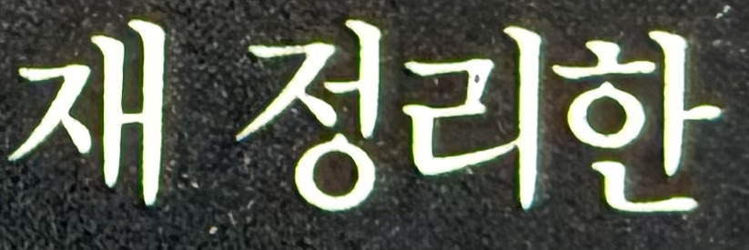
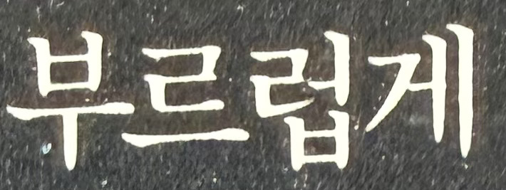
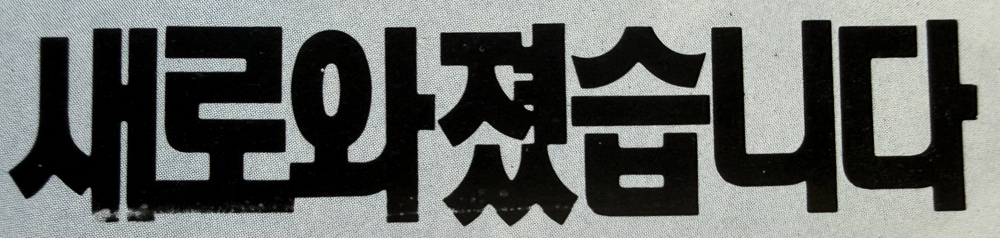
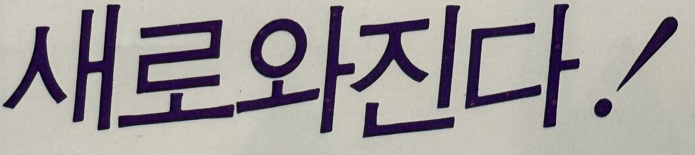
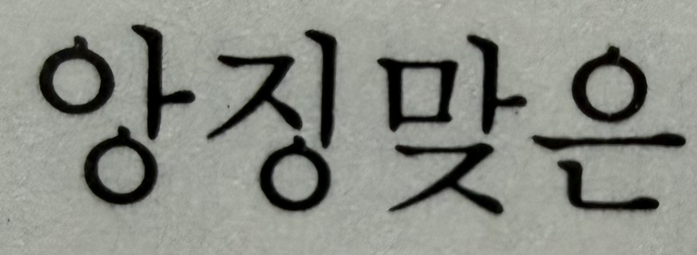
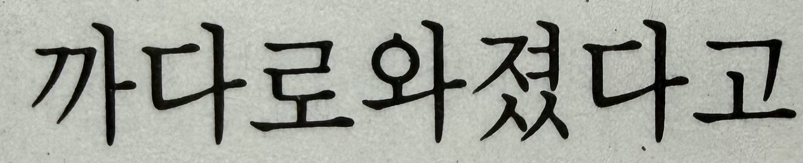
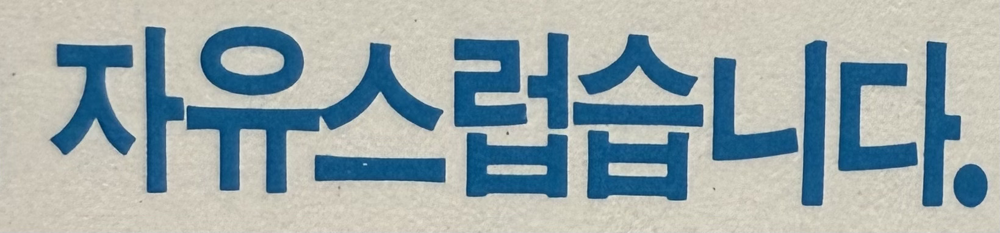
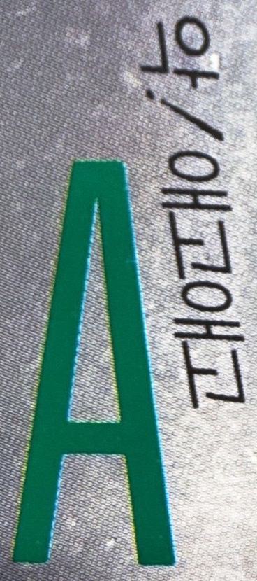

현재 표준 표기 : 재정리
“재-”는 ‘다시’의 의미를 가진 접두사로 '재정리하다’ 활용형은 형태 그대로 표기하는 것이 표준
월간디자인 1990년 9월호 한국 광양사 -이달의 크리에이티브-에서 발췌

현재 표준 표기 : 부드럽게
'부르럽게'라는 비표준어에 대한 내용이 없어서 오타로 추정
월간디자인 1990년 9월호 한국 광양사 -이달의 크리에이티브-에서 발췌

현재 표준 표기 : 새로워졌습니다
‘새롭다’ 활용형은 ‘새로워지다’로 변하며, ‘-워-’ 형태는 어간 ‘ㅂ’ 불규칙 활용에서 ‘우 → 워’로 바뀌는 표준 규칙
월간디자인 1992년 9월호 (주)오리표 광고에서 발췌

현재 표준 표기 : 새로워진다
'새로와졌습니다.'와 같은 규칙
월간디자인 1993년 7월호 114쪽에서 발췌

현재 표준 표기 : 앙증 맞은
‘증(證)’이 어근 구성 요소이며 발음이 빨라질 때 ‘징’으로 잘못 들리는 경우에 표기한 비표준어
월간디자인 1993년 7월호 95쪽에서 발췌

현재 표준 표기 : 까다로워졌다
‘까다롭다’ 활용형은 ㅂ 불규칙 변화로 ‘로우 + 어지다 → 로워지다’가 되어 “까다로워지다”가 표준 형태
'새로와졌습니다', '새로와진다'와 같은 규칙
월간디자인 1993년 7월호 97쪽에서 발췌

현재 표준 표기 : 자유롭습니다
‘자유롭다’는 “자유 + 롭다” 구성의 형용사로 이미 완성된 형태라서 여기에 ‘-스럽다’를 붙이는 것은 중복 파생으로 비표준어
월간디자인 1990년 9월호 ZIG 그래픽마카 광고에서 발췌

현재 표준 표기 : 에고에고
감탄사 ‘에고’의 연속 발화에서 발생한 모음 인지 변동(에→애)에 의한 비표준 표기
월간디자인 1992년 9월호 뒷표지에서 발췌